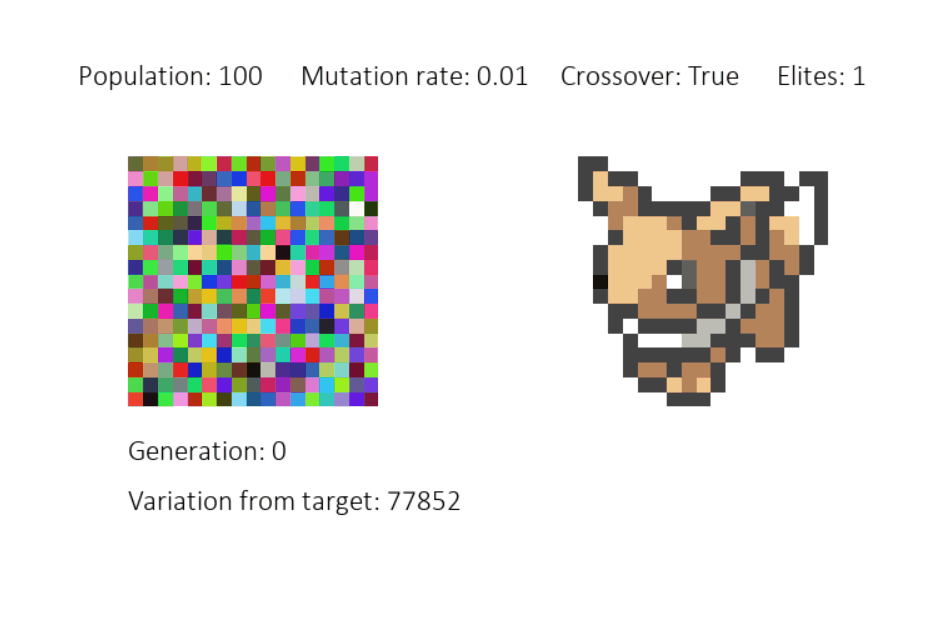
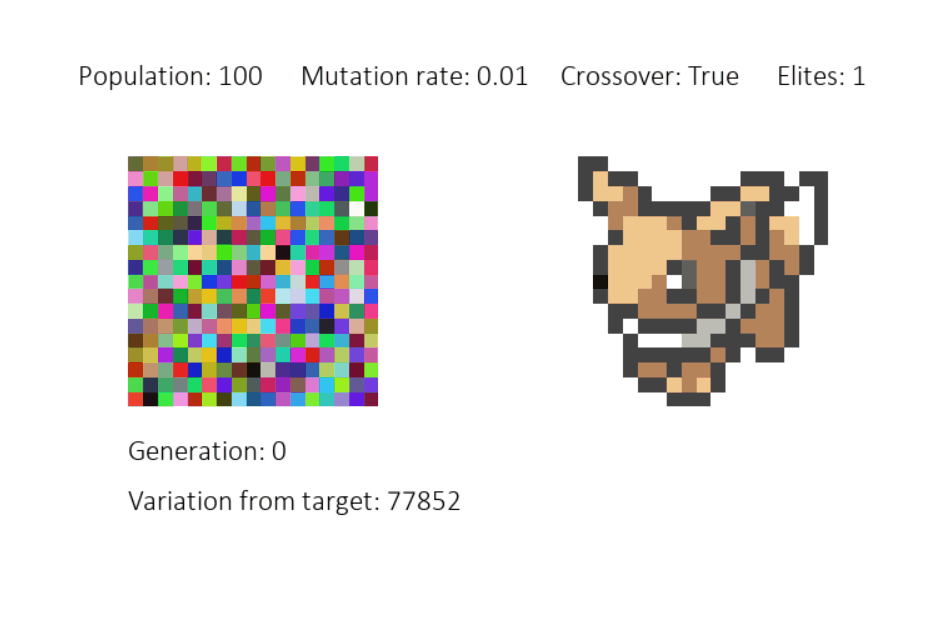

The program models evolution in a truncation generational loop by keeping a population of pictures and performing selection each generation. A population of elites who are closest to the target picture are carried over to the next generation. The best picture from each generation is shown next to the target picture in the display window. The bottom 50% of pictures who are least like the target picture are removed and the top 50% repopulate to replace them. During repopulation, crossover can occur, in which some pixels are taken from one picture and combined with pixels from another picture, creating a hybrid of the two pictures. Offspring also have a chance to mutate, in which pixels are randomly selected to be changed to a random color.